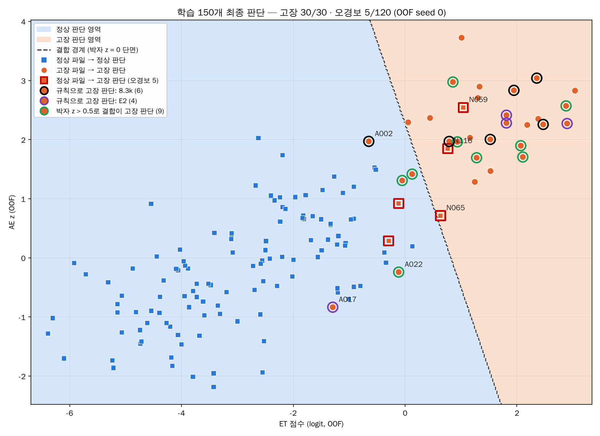
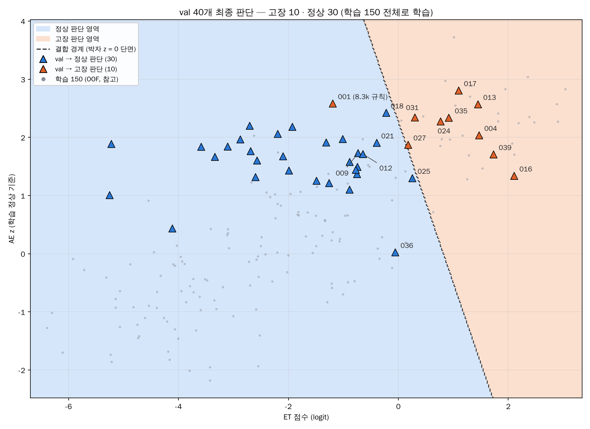

J = ET 점수 + 박자 z + AE z를 로지스틱으로 합치고, 규칙 두 개(E2 하중 대비 덜컥, 8.3 kHz)를 OR로 붙인 모델입니다. 학습 150개에서는 고장 30개를 모두 잡았고, 정상 3개(116 · 065 · 059)는 반복해서 오경보합니다. val 40개 중 10개를 고장으로 판정했으며, 경계에 붙은 파일이 7개라 그 부분은 확신이 낮습니다.
0.977 ± 0.010중첩 CV F2 (seed 5)
1.000재현율
0.030오경보율
10 / 40val 고장 판정
1. 학습 150개 최종 판단

파랑 배경 = 정상 판단 영역, 주황 배경 = 고장 판단 영역(학습 150개 전체로 학습한 결합 경계, 박자 z = 0 단면). 점 색 = 최종 판단(규칙 포함), 모양 = 실제 라벨(네모 정상 · 원 고장). 점은 OOF(fold마다 학습에 안 쓴 모델로 판정)라 경계 근처에서는 배경색과 점 색이 다를 수 있고, 박자 z가 크면 그 파일의 경계는 왼쪽으로 옮겨 갑니다.
파랑 영역 안에 있는데 고장으로 판단된 고장 파일은 규칙이나 박자가 잡은 것입니다. A002는 8.3 kHz 규칙, A017은 E2 규칙, A022는 박자 z(8.5)가 잡았습니다.
빨간 테두리 네모는 오경보입니다(이 seed에서는 5개). 중첩 CV 5 seed에서 반복되는 것은 116 · 065 · 059입니다.
2. 판정하지 못한 것
파일
오경보 횟수 (seed 5번 중)
이유
N116
5
고장과 같은 9.5 kHz 칸에서 울림. 충격 6개로 단발이 아님
N065
4
10.25 kHz 칸에서 한 번 크게 울림. ET·AE 모두 경계 근처
N059
3
8.75–9 kHz 칸. AE z 2.5로 고장 무리 안에 위치
피처 7종, 모델 4종, 저대역 0.2–1 kHz 피처(PHO-006)를 넣어도 이 세 파일은 정상 쪽으로 내려가지 않았습니다. 지금 가진 신호 정보로는 고장과 구분되지 않는 정보 한계로 판단합니다. 또 8.3 kHz 규칙 문턱은 라벨을 본 뒤 정한 값이라 F2 0.977은 조금 낙관적입니다.
3. val 40개 최종 판단

배경은 그림 1과 같은 경계입니다. 삼각형 = val(주황 = 고장 판단, 파랑 = 정상 판단), 회색 점 = 학습 150개(참고). 고장 판단 10개: 001 004 013 016 017 024 027 031 035 039. 001만 파랑 영역에 있는데, 8.3 kHz 규칙이 고장으로 판단했습니다.
주의: val은 AE z가 학습 정상보다 전체적으로 높습니다(중앙 약 +1.7, 학습 정상 0). val의 3–5 kHz 배경이 통째로 +10.9 dB 올라가 있어 고장 비율보다는 측정 조건 차이일 가능성이 큽니다. 그래서 val 삼각형이 위쪽에 몰려 있고, 판정은 사실상 ET 점수가 가릅니다.
4. 경계에 있는 val 파일
여유 = 결합 점수가 경계에서 떨어진 정도(학습 정상 점수 IQR 단위). +는 고장 쪽, −는 정상 쪽이며, 0에 가까울수록 작은 변화에도 판정이 뒤집힐 수 있습니다.
val
판단
여유
ET
AE z
경계인 이유
027
고장
+0.14
0.18
1.87
ET는 경계 바로 위, 박자 z 1.2가 고장 쪽으로 밀어 줌
025
정상
−0.03
0.25
1.30
ET만 보면 고장. AE가 상대적으로 낮아 결합이 정상으로 판단
018
정상
−0.05
−0.22
2.42
ET는 정상인데 AE가 높아 경계에 붙음(AE 이동 영향이 가장 큰 유형)
021
정상
−0.17
−0.39
1.91
018과 같은 유형
012
정상
−0.28
−0.64
1.71
ET·AE 모두 중간값
036
정상
−0.29
−0.06
0.02
ET는 경계인데 AE가 거의 0이라 결합이 정상으로 판단
009
정상
−0.31
−0.73
1.73
012와 같은 유형
001
고장
규칙
−1.19
2.58
ET로는 정상, 8.3 kHz 규칙으로만 고장. 학습의 A002와 같은 모습
ET만 쓰면 025 · 036도 고장이 되어 11개입니다. 이 두 파일은 결합 모델과 ET 단독의 판단이 갈립니다.
저대역 피처를 넣은 실험(PHO-006)에서는 025 · 018이 고장으로 뒤집혔습니다. 경계 파일이 실제로 흔들린다는 근거입니다.
val 판정은 학습 150개 전체로 한 번 학습한 결과이며 제출 파일이 아닙니다. 그림 코드: 공유_1122/그림_최종판단.py (QE_FULL=1).